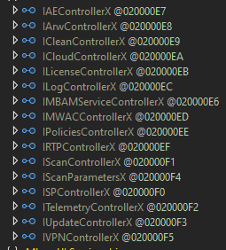
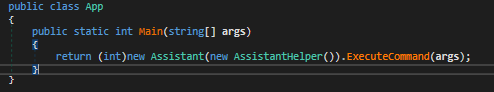
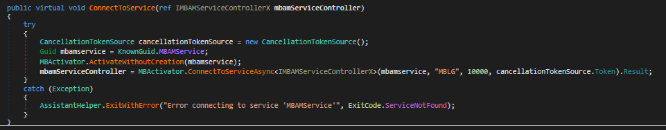
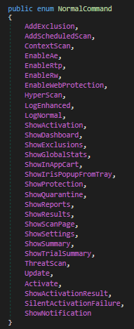
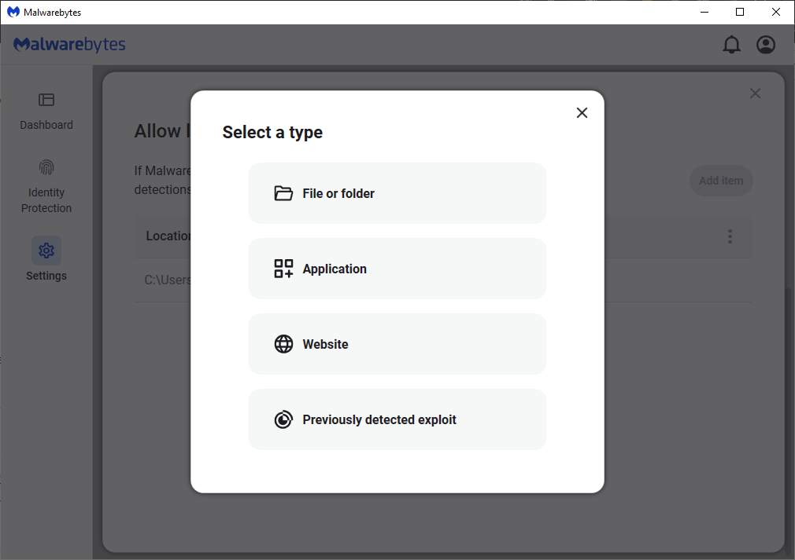
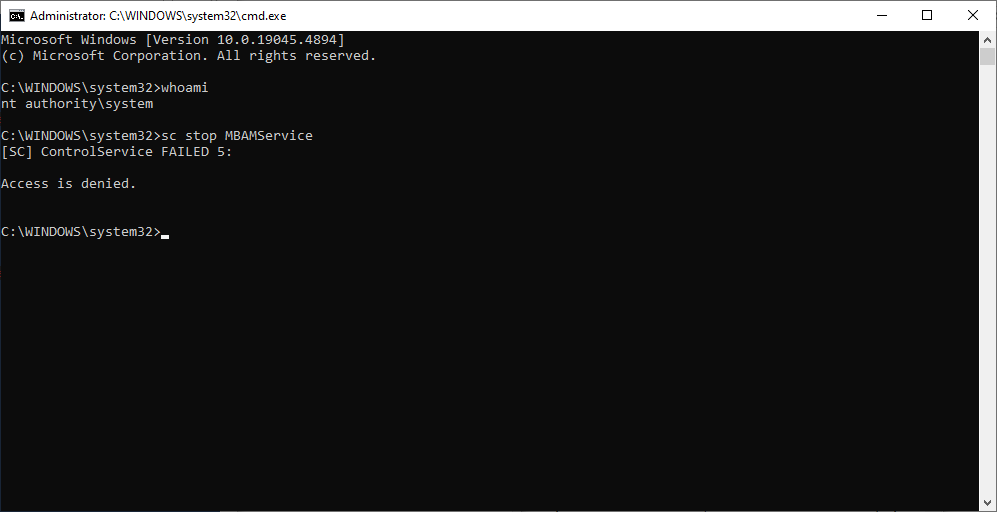
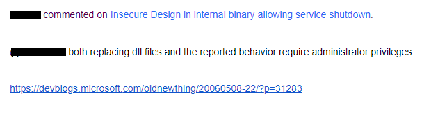

Introduction
While messing around with a tool I built to search for .NET assemblies, I saw Malwarebytes pop up, It’s not every day you see an antivirus using .NET 🤓, so naturally, I got curious and started looking.
Overview of Malwarebytes
Malwarebytes has a user interface built with WPF (Windows Presentation Foundation), which is a framework for creating desktop applications on Windows and runs on .NET Core 6, along with some other .NET versions for other DLLs.
How it communicates
To communicate with it's service (MBAMService), Malwarebytes uses named pipes and COM objects.
public static async Task<T> ConnectToServiceAsync<T>(Guid classGuid, string pipeName, int connectionTimeout, CancellationToken cancellationToken) where T : class
{
string text = string.Empty;
using (NamedPipeClientStream pipe = new NamedPipeClientStream(".", pipeName, PipeDirection.InOut, PipeOptions.Asynchronous))
{
if (connectionTimeout == 2147483647)
{
await pipe.ConnectAsync(cancellationToken).ConfigureAwait(false);
}
else
{
await pipe.ConnectAsync(connectionTimeout, cancellationToken).ConfigureAwait(false);
}
pipe.ReadMode = PipeTransmissionMode.Message;
byte[] bytes = Encoding.Unicode.GetBytes("NeedAKey");
await pipe.WriteAsync(bytes, 0, bytes.Length, cancellationToken).ConfigureAwait(false);
byte[] buffer = new byte[256];
int num = await pipe.ReadAsync(buffer, 0, 256, cancellationToken).ConfigureAwait(false);
text = Encoding.Unicode.GetString(buffer, 0, num);
buffer = null;
}
NamedPipeClientStream pipe = null;
return (Ole32.CoGetClassObject(classGuid, RegistrationClassContext.LocalServer, IntPtr.Zero, typeof(IClassFactory2).GUID) as IClassFactory2).CreateInstanceLic(null, null, typeof(T).GUID, text) as T;
}
The ConnectToServiceAsync method establishes a connection using the named pipe "MBLG."
Once connected, it sends a message, NeedAKey to request a key. An example of a received key might look like this: C6110F4E09A0C4ED82231F627C2D6B8AE782437BED9B7361BB99525F6D852ABE.
After obtaining the key, the CoGetClassObject function retrieves a COM class factory, and the CreateInstanceLic method uses the received key to create an instance of the service controller (IMBAMServiceControllerX).
Controllers in Malwarebytes
Malwarebytes has an extensive set of controllers, each with their specific functions, that help manage various functionalities within the application.

Here are a few examples:
IAEControllerX: Handles the Anti-Exploit features.ICloudControllerX: Handles interactions with cloud services.ILogControllerX: Responsible for logging events and activities within the application.IMBAMServiceControllerX: Acts as the main interface for communicating with the Malwarebytes service.ITelemetryControllerX: Handles the collection and transmission of telemetry data back to Malwarebytes.
Digging into the Assistant Binaries
One of the other things that raised my attention was 2 binaries on Malwarebytes folder:
- assistant.dll
- malwarebytes_assistant.dll
I first started by looking at assistant.dll.

The AssistantHelper class is responsible for connecting to the MBAMService and instantiating the service controller using the same method that we previously saw.

The Assistant class however is a bit more interesting, it checks if the first argument starts with "-" and if yes, tries to parse it from a list of defined commands

A lot of these commands are related to views, so for example, if I send a -AddExclusion, I go to this menu inside Malwarebytes:

This alone is not a problem, all the defined commands do not impact the functionality of Malwarebytes, since there is no command to disable protective features, only to enable them.
Furthermore, I found no references to this binary in any other binary, so I believe it is primarily used for tasks involving Malwarebytes URL protocol, as you can run any of these commands by using malwarebytes://<command>.

I then shifted my focus to the other binary (malwarebytes_assistant.dll). This one seems more interesting, as it requires you to run it as an administrator.
When checking its entry point, it appears almost identical to assistant.dll, with the main difference the commands it provides.


Example of a few commands:
- Stop the service:
--StopService - Disable ransomware protection:
--DisableRw - Disable exploit protection:
--DisableAe - Disable web protection:
--DisableWebProtection - Disable malware pup protection:
--DisableRtp
I think Malwarebytes chose this approach to trigger a UAC prompt for specific actions, like disabling real-time protection settings.
When you try to disable any real-time protection, what actually happens is that Malwarebytes calls the malwarebytes_assistant to perform the action. This allows them to prompt the user for elevated privileges when necessary, making it harder to disable protections without administrative approval.

Because of this, all an attacker would need to do is, for example, run the following command:
Start-Process -FilePath "C:\Program Files\Malwarebytes\Anti-Malware\malwarebytes_assistant.exe" -ArgumentList "--StopService"
Without admin privileges, this will trigger a UAC prompt. In a corporate setting, it may be harder to exploit due to tighter security, but on a typical user's machine, many might unknowingly click 'Yes' on a prompt from a trusted Malwarebytes binary. While this relies on the user’s approval, it's still a potential security issue.
Another concern I mentioned is the lack of file integrity checking. In .NET Core, the .exe is just a launcher, while the actual code resides in the .dll files.
Even though the executable is signed, an attacker could modify the DLLs, and the application would still run. This allows malicious code injection, enabling actions like adding exclusions or interacting with other Malwarebytes controllers.


Why I think This is a Security Concern
Modern antivirus solutions are designed with robust protections to prevent unauthorized access and tampering, even for users with admin privileges.
The whole idea behind these systems is to maintain the integrity of the software and ensure that TA's can’t easily manipulate it.
I think that having a signed binary that allows you to stop the service or stop protection settings by passing user arguments poses a significant security risk.
Malwarebytes response
The response from malwarebytes was a bit underwhelming. They focused heavily on the idea that if you have admin privileges, you can already do whatever you want with the system.
I refuted that by showing a screenshot of a system prompt where I try to stop the service and kill the process but fail.

They then sent me a link to a Microsoft blog post that essentially said, “Not every code injection bug is a security hole.” After that, they locked the thread, cutting off any chance for further discussion.

Even though I understand that needing admin privileges makes it less critical, I still think this is a valid problem and could be abused.
Many modern antivirus solutions implement protections that prevent even an admin from disabling or tampering with the antivirus, including Malwarebytes, which has a self-protection module.
Conclusion?
While writing this blog post, I started thinking about the two assistant binaries again.
Since they have almost identical code, differing mainly in the commands they support and the fact that one requires admin privileges while the other doesn’t, I decided to experiment.
I modified the DLL that doesn't need admin access (assistant.dll) and attempted to run some commands to try and stop the service.

While my initial attempt to stop the service failed, after testing a few more commands, I was able to:
- Disable Tamper protection
- Disable Self-Protection
- Disable Malwarebytes running on windows startup
- Disable Automatic quarantine for malware
This was done by modifying an already existing method, in this case EnableRw.
This method normally enables ransomware protection, but I modified it to this:

So the attack flow would be:
- Drop the modified file and all the needed files for it to run:

- Call the modified version:
mb.exe -EnableRtp. - Add persistence to target machine (this can also be done from inside
assistant.dll). - Reboot the machine (so that Malwarebytes doesn't start).
- Run malicious actions.
Since this does not require admin to do, I decided to report this one as a new report to Malwarebytes.
For my surprise, the same person that previously reviewed my other report, sent a message saying it was irrelevant because admin privileges were needed (??), which makes me think the person in question didn't even read the report. The thread was then immediately locked leaving me no possibility to comment.

Because the thread was locked, I was not able to respond on this report, I tried to open another one and clarify further the issue

This report was also closed/locked with no message and I was banned from reporting any more issues to Malwarebytes for spam

Tooling
During this I developed a tool to interact with Malwarebytes, this tool lets you disable real-time protection, stop the service, add exclusions and remove notifications entirely, and I am currently adding more stuff to it.

https://github.com/miltinhoc/MbToolkit
Another little tool I develop was a fake popup that pretends to be a Malwarebytes notification, when you try to click on "Turn On", it tries to stop the Malwarebytes service using malwarebytes_assistant.exe.

https://github.com/miltinhoc/FakePopup
And to finalize I also made a tool that does what I reported on my second report, it drops a modified version of Malwarebytes and disables self-protect, tamper protection automatic malware quarantine and Malwarebytes startup with windows.
https://github.com/miltinhoc/MalwarebytesDropper
Final Conclusion
At the end of the day, it’s up to Malwarebytes to decide whether to accept or deny a report, and even though I do not agree with them, I must respect their decision. The only thing I can do is share my findings and add this one to my toolkit for the future If I ever come across Malwarebytes during any assignments.
Update
Two days ago, on October 28th, my report was reopened, and I received a message:

I wasn’t expecting this, especially since I was banned from reporting almost a month ago, had written this post, and as time passed, I stopped believing they would actually do anything about it.
But, I’m happy that they actually reviewed my report and In the end everything worked out well.